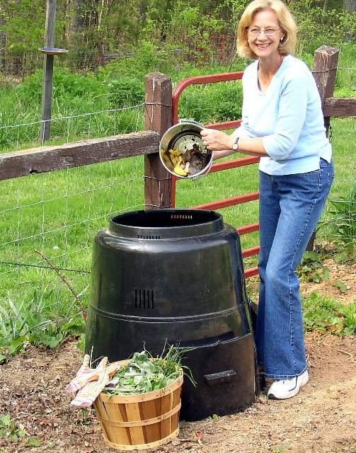

Home composting is the ultimate way to claim responsibility for the ton or two of compostable waste most of us generate each year, plus there are plenty of benefits of adding compost to your garden and soil. This is a hot topic right now, as the second week of May is International Compost Awareness Week.
So why doesn't everyone do it?
In some places, almost everyone does. A 2006 survey by Statistics Canada showed that 98 percent of the residents of Prince Edward Island compost, followed closely by Nova Scotia with 95 percent. Compare and contrast: After 10 years of dedicated public compost education efforts in Portland, Ore. - including the sale of more than 90,000 plastic composters - just over 30 percent of households compost their kitchen waste. In compost-crazy Alameda County, Cal., about 24 percent of homeowners with yards are active composters.
What's wrong with this picture? Hooray for everyone who is composting, but why do so many people think it's OK not to compost? Compost educators in search of answers are all over a recent study from Scotland titled Behavioral Determinants of Household Participation in a Home Composting Scheme. The bottom line is that it's all about attitude. To get a non-composter to pick up a digging fork, forget about saving the world. Instead, convince them that composting is what they must do to be a good person. Then give them a bin.
These and other studies on home composting also shed light on the habits of active composters, who typically compost 70 percent of their food waste and either compost or recycle all of their yard waste. Once people start composting, they don't stop - nine out of 10 people who start composting are still at it 10 years later. Long-time composters tend to keep more than one type of compost, too - usually a heap and an enclosed bin.
Sound familiar? Another statistical tidbit about fellow rot-watchers caught my eye: People who make compost are more likely to buy compost. Confession time: I had been feeling guilty about the three big bags of Poplar Manor compost I bought last week, but not anymore! After all, buying locally made compost is a good move that helps my garden and my community, and it takes the pressure off of my compost to hurry up and get done.
So, are you more aware of compost now? Want to learn more? Read Compost Made Easy.
- Mother Earth News contributing editor Barbara Pleasant is the author of The Complete Compost Gardening Guide. She lives in Floyd, Virginia.
|
 BARBARA PLEASANT/WWW.COMPOSTGARDENING.COM Like many active composters, Barbara Pleasant keeps more than one type of compost going. This stationary composter is a recent addition to her collection. |
BARBARA PLEASANT/WWW.COMPOSTGARDENING.COM Composting is good for your garbage bill, your garden and the planet. Maybe the only thing missing is you. |
BARBARA PLEASANT/WWW.COMPOSTGARDENING.COM If you don't make enough compost to meet your needs, there is no shame in buying locally produced black gold. |